* To appear as Chapter 20 (pp. 319-348) in Cognition and Survey Research, edited by M. G. Sirken, D. J. Hermann, S. Schechter, N. Schwartz, J. M. Tanur, and R Tourangeau, 1999, John Wiley and Sons, Inc. ISBN 0-471-24138-5. This copy reflects the submitted draft, but not editorial changes in the final copy. I am grateful to Douglas Hermann for helpful comments on the manuscript.
Graphical methods for quantitative data are well-developed, and widely used in both data analysis (e.g., detecting outliers, verifying model assumptions) and data presentation. Graphical methods for categorical data, however, are only now being developed, and are not widely used.This paper outlines a general framework for data visualization methods in terms of communication goal (analysis vs. presentation), display goal, and the psychological and graphical design principles which graphical methods for different purposes should adhere to.
These ideas are illustrated with a variety of graphical methods for categorical data, some old and some relatively new, with particular emphasis on methods designed for large, multi-way contingency tables. Some methods (sieve diagrams, mosaic displays) are well-suited for detecting and patterns of association in the process of model building; others are useful in model diagnosis, or as graphical summaries for presentation of results.
1 Introduction
2 Goals and Design Principles for Visual Data Display
3 Some Graphical Methods for Categorical Data
3.1 Sieve diagrams
3.2 Mosaic displays for n-way tables
3.2.1 Enhanced mosaics
3.2.2 Multi-way tables
3.2.3 Fitting models
3.2.4 Color scales for residuals
3.3 Fourfold Display
3.3.1 Multiple strata
3.3.2 Visualization principles
4 Example: NAEP 1992 Grade 12 Mathematics
4.1 Analysis of [Ethnicity, Poverty, Achievement Level]
4.2 Analysis of the Full Table
4.3 Other displays
5 Effect Ordering for Data Displays
6 Mosaic Matrices and Coplots for Categorical Data
What has made this contrast puzzling is the fact that the statistical methods for categorical data, are in many respects, discrete analogs of corresponding methods for quantitative data: log-linear models and logistic regression, for example, are such close parallels of analysis of variance and regression models that they can all be seen as special cases of generalized linear models.
Several possible explanations for this apparent puzzle may be suggested. First, it may just be that those who have worked with and developed methods for categorical data are just more comfortable with tabular data, or that frequency tables, representing sums over all cases in a dataset are more easily apprehended in tables than quantitative data. Second, it may be argued that graphical methods for quantitative data are easily generalized; for example, the scatterplot for two variables provides the basis for visualizing any number of variables in a scatterplot matrix; available graphical methods for categorical data tend to be more specialized.
However, a more fundamental reason may be that quantitative and categorical data display are best served by different visual metaphors. Quantitative data rely on the natural visual representation of magnitude by length or position along a scale; for categorical data, it will be seen that a count is more naturally displayed by an area or by the visual density of an area.
To make the contrast clear, Section 3 describes and illustrates several graphical methods for categorical data, some old and some relatively novel, with particular emphasis on methods designed for large, multi-way contingency tables. Some methods (sieve diagrams, mosaic displays) are well-suited for detecting and patterns of association in the process of model building; others are useful in model diagnosis, or as graphical summaries for presentation of results. A more substantive illustration follows in Section 4. A final section describes some ideas for effective visual presentation. But first I will outline a general framework for data visualization methods in terms of communication goal (analysis vs. presentation), display goal, and the psychological and graphical design principles which graphical methods for different purposes should adhere to.
Designing good graphics is surely an art, but equally surely, it is one that ought to be informed by science. In constructing a graph, quantitative and qualitative information is encoded by visual features, such as position, size, texture, symbols and color. This translation is reversed when a person studies a graph. The representation of numerical magnitude and categorical grouping, and the aperception of patterns and their meaning must be extracted from the visual display.
There are many views of graphs, of graphical perception, and of the roles of data visualization in discovering and communicating information. On the one hand, one may regard a graphical display as a 'stimulus' - a package of information to be conveyed to an idealized observer. From this perspective certain questions are of interest: which form or graphic aspect promotes greater accuracy or speed of judgment (for a particular task or question)? What aspects lead to greatest memorability or impact? Cleveland [7:1984:Cleveland and McGill,8:1985:Cleveland and McGill,5:1993a:Cleveland], Lewandowsky and Spence [22:1989:Lewandowsky and Spence,27:1990:Spence] have made important contributions to our understanding of these aspects of graphical display.
An alternative view regards a graphical display as an act of communication-like a narrative, or even a poetic text or work of art. This perspective places the greatest emphasis on the desired communication goal, and judges the effectiveness of a graphical display in how well that goal is achieved. [20:1985:Kosslyn,21:1989:Kosslyn] has articulated this perspective most clearly from a cognitive perspective.
In this view, an effective graphical display, like good writing, requires an understanding of its purpose-what aspects of the data are to be communicated to the viewer. In writing we communicate most effectively when we know our audience and tailor the message appropriately. So too, we may construct a graph in different ways to use ourselves, to present at a conference or meeting of our colleagues, or to publish in a research report, or a communication to a general audience [11:1991:Friendly].
Figure 1 shows one organization of visualization methods in terms of the primary use or intended communication goal, the functional presentation goal, and suggested corresponding design principles.
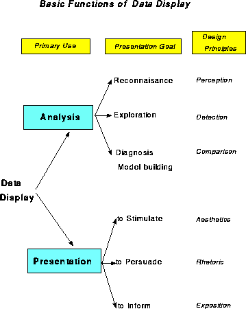
The first distinction identifies Analysis or Presentation as the primary communication goal of a data graphic (with the understanding that a given graph may serve both purposes-or neither). Among graphical methods designed to help study or understand a body of data, I distinguish those designed for:
Presentation graphics have different presentation goals as well. We may wish to stimulate, or to persuade, or simply to inform. As in writing, it is usually a good idea to know what it is you want to say with a graph, and tailor its message to that goal. (In what follows, my presentation goal is primarily didactic.)
One-way frequency tables may be conveniently displayed in a variety of ways: typically as bar charts (though the bars should often be ordered by frequency, rather than by bar-label), dot charts [6:1993b:Cleveland] or pie charts (when percent of total is important).
For two- (and higher-) way tables, however, the design principles of perception, detection, and comparison imply that we should try to show the observed frequencies in the cells in relation to what we would expect those frequencies to be under a reasonable null model - for example, the hypothesis that the row and column variables are unassociated.
To this end, several schemes for representing contingency tables graphically are based on the fact that when the row and column variables are independent, the estimated expected frequencies, mij, are products of the row and column totals (divided by the grand total): mij = ni+ n+j / n++ . Then, each cell can be represented by a rectangle whose area shows the cell frequency, nij, or the deviation from independence.
Table 1 shows data on the relation between hair color and eye color among 592 subjects (students in a statistics course) collected by [26:1974:Snee]. . The Pearson c2 for these data is 138.3 with nine degrees of freedom, indicating substantial departure from independence. Assume the goal is to understand the nature of the association between hair and eye color.
| Hair Color | |||||
| Eye | |||||
| Color | BLACK | BROWN | RED | BLOND | Total |
| Green | 5 | 29 | 14 | 16 | 64 |
| Hazel | 15 | 54 | 14 | 10 | 93 |
| Blue | 20 | 84 | 17 | 94 | 215 |
| Brown | 68 | 119 | 26 | 7 | 220 |
| Total | 108 | 286 | 71 | 127 | 592 |
For any two-way table, the expected frequencies under independence can be represented by rectangles whose widths are proportional to the total frequency in each column, n+j, and whose heights are proportional to the total frequency in each row, ni+; the area of each rectangle is then proportional to mij. Figure 2 shows the expected frequencies for the hair and eye color data. Each rectangle is ruled proportionally to the expected frequency, and we note that the visual densities are equal in all cells.
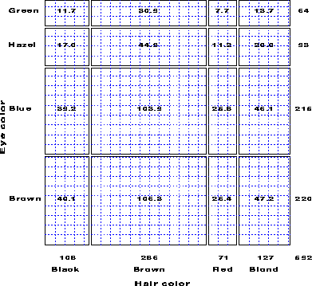
[24:1983:Riedwyl and Schüpbach,25:1994:Riedwyl and Schüpbach] proposed a sieve diagram (later called a parquet diagram) based on this principle. In this display the area of each rectangle is proportional to expected frequency, as in Figure 2, but observed frequency is shown by the number of squares in each rectangle. Hence, the difference between observed and expected frequency appears as the density of shading, using color to indicate whether the deviation from independence is positive or negative. (In monochrome versions, positive residuals are shown by solid lines, negative by broken lines.) The sieve diagram for hair color and eye color is shown in Figure 3.
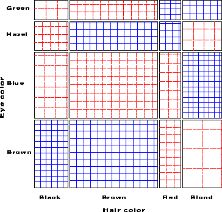
The mosaic display, proposed by [18:1981:Hartigan and Kleiner,19:1984:Hartigan and Kleiner], and extended by [12:1992:Friendly,14:1994b:Friendly] represents the counts in a contingency table directly by tiles whose area is proportional to the observed cell frequency. One important design goal is that this display should apply extend naturally to three-way and higher-way tables. Another design feature is to serve both exploratory goals (by showing the pattern of observed frequencies in the full table), and model building goals (by displaying the residuals from a given log-linear model).
One form of this plot, called the condensed mosaic display, is similar to a divided bar chart. The width of each column of tiles in Figure 4 is proportional to the marginal frequency of hair colors; the height of each tile is determined by the conditional probabilities of eye color in each column. Again, the area of each box is proportional to the cell frequency, and independence is shown when the tiles in each row all have the same height.
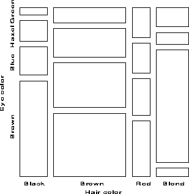
Figure 5 gives the extended the mosaic plot, showing the standardized (Pearson) residual from independence, dij = (nij - mij) / Ö{ mij } by the color and shading of each rectangle: cells with positive residuals are outlined with solid lines and filled with slanted lines; negative residuals are outlined with broken lines and filled with grayscale. The absolute value of the residual is portrayed by shading density: cells with absolute values less than 2 are empty; cells with | dij | ³ 2 are filled; those with | dij | ³ 4 are filled with a darker pattern.1 Under the assumption of independence, these values roughly correspond to two-tailed probabilities p < .05 and p < .0001 that a given value of | dij | exceeds 2 or 4. For exploratory purposes, we do not usually make adjustments (e.g., Bonferroni) for multiple tests because the goal is to display the pattern of residuals in the table as a whole. However, the number and values of these cutoffs can be easily set by the user.
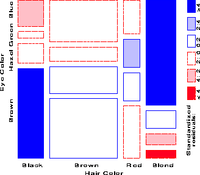
When the row or column variables are unordered, we are also free to rearrange the corresponding categories in the plot to help show the nature of association. For example, in Figure 5, the eye color categories have been permuted so that the residuals from independence have an opposite-corner pattern, with positive values running from bottom-left to top-right corners, negative values along the opposite diagonal. Coupled with size and shading of the tiles, the excess in the black-brown and blond-blue cells, together with the underrepresentation of brown-haired blonds and people with black hair and blue eyes is now quite apparent. Though the table was reordered based on the dij values, both dimensions in Figure 5 are ordered from dark to light, suggesting an explanation for the association. (In this example the eye-color categories could be reordered by inspection. A general method [14:1994b:Friendly] uses category scores on the largest correspondence analysis dimension.)
| (1) |
| (2) |
For example, with the data from Table 1 broken down by sex, fitting the joint independence model [HairEye][Sex] allows us to see the extent to which the joint distribution of hair-color and eye-color is associated with sex. For this model, the likelihood-ratio G2 is 19.86 on 15 df (p = .178), indicating an acceptable overall fit. The three-way mosaic, shown in Figure 6, highlights two cells: among blue-eyed blonds, there are more females (and fewer males) than would be if hair color and eye color were jointly independent of sex. Except for these cells hair color and eye color appear unassociated with sex.
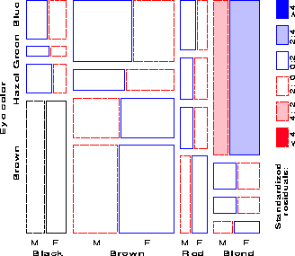
For higher-way tables, there are many more possible models that can be fit. However, they have the characteristic that, for any given table (or marginal subtable), the size of tiles in the mosaic always shows the same observed frequencies, while the shading (showing the sign and magnitude of the residuals) varies from one model to another. Because a good-fitting model will have all or mostly small residuals, and these are shown unfilled, a search for an adequate explanatory model can be thought of as ``cleaning the mosaic''.
When we display signed magnitudes, such as residuals from a fitted model or differences between time points on a mosaic or a map, the goal is usually to convey both magnitude (how big a difference?) and direction (is it more or less?). For this use, a double-ended color scale, using opposing colors such as red and blue, with darker, more saturated colors at the extremes, is usually most effective. In the mosaic display I use the color scheme [6:1993b:Cleveland] refers to as ``two-hues, varying lightness'', and which [21:994:Carr] uses quite effectively in the display of residuals on a map.
The choice of opposing colors and assignment to positive and negative, requires care and consideration of the intended audience, however. I use red for negative ``deficit'' values and blue for positive ``excesses''; [21:994:Carr] in displays of rates of disease assigns red to positive ``hot spots'' and cooler blue to negative values. Various government agencies have other conventions about the assignment of color. Unfortunately, black and white reproduction of red/blue displays folds red and blue to approximately equal gray levels. In the mosaic displays, I usually prepare different versions-using gray level and pattern fills for figures to be shown in black and white. Color versions of the figures shown here are available on the WWW at, well, here!. .
A third graphical method based on area as the visual mapping of cell frequency is the ``fourfold display'' designed for the display of 2 ×2 (or 2×2 ×k) tables. In this display the frequency nij in each cell of a fourfold table is shown by a quarter circle, whose radius is proportional to Ö{ nij }, so the area is proportional to the cell count.
For a single 2 ×2 table the fourfold display described here also shows the frequencies by area, but scaled in a way that depicts the sample odds ratio, [^(q)] = (n11 / n12 )¸(n21 / n22 ). An association between the variables (q ¹ 1) is shown by the tendency of diagonally opposite cells in one direction to differ in size from those in the opposite direction, and the display uses color or shading to show this direction. Confidence rings for the observed q allow a visual test of the hypothesis H0 : q = 1. They have the property that the rings for adjacent quadrants overlap iff the observed counts are consistent with the null hypothesis.
As an example, Figure 7 shows aggregate data on applicants to graduate school at Berkeley for the six largest departments in 1973 classified by admission and sex. At issue is whether the data show evidence of sex bias in admission practices [1:1975:Bickel et al.Bickel, Hammel, and O'Connell]. The figure shows the observed cell frequencies numerically in the corners of the display. Thus there were 2691 male applicants, of whom 1193 (44.4%) were admitted, compared with 1855 female applicants of whom 557 (30.0%) were admitted. Hence the sample odds ratio, Odds (Admit|Male) / (Admit|Female) is 1.84 indicating that males were almost twice as likely to be admitted.
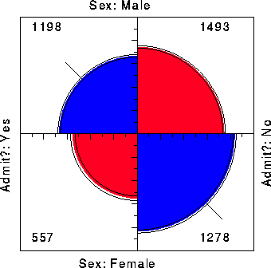
The frequencies displayed graphically by shaded quadrants in Figure 7 are not the raw frequencies. Instead, the frequencies have been standardized (by iterative proportional fitting) so that all table margins are equal, while preserving the odds ratio. Each quarter circle is then drawn to have an area proportional to this standardized cell frequency. This makes it easier to see the association between admission and sex without being influenced by the overall admission rate or the differential tendency of males and females to apply. With this standardization the four quadrants will align when the odds ratio is 1, regardless of the marginal frequencies.
The shaded quadrants in Figure 7 do not align and the 99% confidence rings around each quadrant do not overlap, indicating that the odds ratio differs significantly from 1-putative evidence of gender bias. The width of the confidence rings gives a visual indication of the precision of the data-if we stopped here, we might feel quite confident of this conclusion.
For example, the admissions data shown in Figure 7 were obtained from a sample of six departments; Figure 8 displays the data for each department. The departments are labelled so that the overall acceptance rate is highest for Department A and decreases steadily to Department F. Again each panel is standardized to equate the marginals for sex and admission. This standardization also equates for the differential total applicants across departments, facilitating visual comparison.
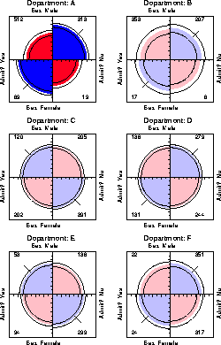
Surprisingly, Figure 8 shows that, for five of the six departments, the odds of admission is essentially identical for men and women applicants. Department A appears to differs from the others, with women approximately 2.86 ( = ( 313/19 ) /(512/89)) times more likely to gain admission. This appearance is confirmed by the confidence rings, which in Figure 8 are joint 99% intervals for qc , c = 1, ..., 6.
This result, which contradicts the display for the aggregate data in Figure 7, is a nice example of Simpson's paradox. The resolution of this contradiction can be found in the large differences in admission rates among departments. Men and women apply to different departments differentially, and in these data women apply in larger numbers to departments that have a low acceptance rate. The aggregate results are misleading because they falsely assume men and women are equally likely to apply in each field.2
Another principle is visual impact-we want the important features of the display to be easily distinguished from the less important [28:1993:Tukey]. In Figure 8 distinguishes the one department for which the odds ratio differs significantly from 1 by shading intensity, even though the same information can be found by inspection of the confidence rings.
The previous section used simple examples to illustrate these somewhat novel techniques themselves. This section illustrates the use of these graphical methods in attempting to understand a large, complex dataset of the sort often found in public policy research, and which often defies standard visualization methods.
Table 2 is a four-way classification of over 3.5 million examinees from the 1992 National Assessment of Educational Proficiency , classified by their high school program (Academic, Non Academic), their economic status (Not Poor vs. Poor), and ethnic group (White, Asian, Hispanic, Black). Students in the background groupings are then classified by their performance on the NAEP Mathematics test, recorded here as Advanced, Proficient, Basic or Below Basic.
| Not Poor | Poor | ||||||||
| White | Asian | Black | Hispanic | White | Asian | Black | Hispanic | ||
| Advanced | 23403 | 1711 | 0 | 1050 | 6814 | 542 | 0 | 633 | |
| Proficient | 224723 | 15145 | 4591 | 5716 | 96442 | 5654 | 3308 | 7500 | |
| Basic | 679319 | 30590 | 32937 | 26709 | 439109 | 27276 | 64451 | 42726 | |
| BelowBasic | 102849 | 3645 | 23983 | 20596 | 135919 | 7974 | 132421 | 52327 | |
|
| White | Asian | Black | Hispanic | White | Asian | Black | Hispanic | |
| Advanced | 1866 | 0 | 0 | 0 | 0 | 0 | 0 | 0 | |
| Proficient | 24317 | 2518 | 1039 | 570 | 716 | 557 | 0 | 482 | |
| Basic | 208710 | 13142 | 14271 | 16338 | 151369 | 5478 | 9229 | 23551 | |
| BelowBasic | 244240 | 7149 | 60868 | 35233 | 254734 | 3315 | 134874 | 81356 | |
One glance at Table 2 shows two things: First, very few students achieve Advanced level, none in Non Academic Programs (save a few Not Poor white students); as a result, the analysis below combines Advanced and Proficient, labelled ``Proficient+''. Second, the usefulness of this table as a data display is nil, except as a record of the results.
Mosaic displays are constructed sequentially, with the variables arranged in a particular order, and it usually makes sense to order the variables in a quasi-causal, or predictor-response fashion. Here I consider Ethnicity and Poverty as (partial) determinants of academic Program, and all three of these as potential predictors of achievement level.
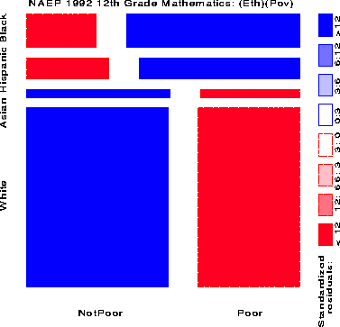
Figure 10 shows the relation between Achievement Level and Ethnicity and Poverty, fitting a model [(EthPov)(Level)] which says that Level is independent of the combinations of Ethnicity and Poverty jointly. The shading pattern shows how violently this model is contradicted by the data (G2 (14) = 553,568):
It is depressingly striking how few 12th grade children are classified in the Advanced or Proficient categories.
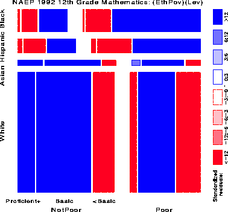
Figure 11 shows the relation between Academic Program and the combinations of Ethnicity and Poverty; residuals show how Program is associated with the categories of the other two variables:
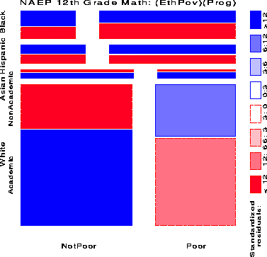
Figure 12 shows the relation between NAEP Achievement Level and the combinations of Ethnicity, Poverty, and academic Program jointly. The associations among the three background variables just observed (Figure 11) have been eliminated and the residuals now show how Achievement Level is associated with the combinations of the other three variables. This is admittedly a complex display, but a few moments study reveals the following:
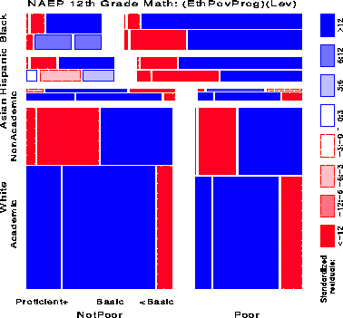
The patterns for Blacks and Hispanics diverge here for the first time:
In order to adjust for the great imbalance in the numbers of examinees in the different Poverty-Ethnic group combinations, the data in Table 2 were standardized to equate the column totals in that table. These standardized frequencies are displayed directly in Figure 13, scaled so that the largest such frequency has unit radius. As a result, the distributions across the columns and rows may be readily compared.
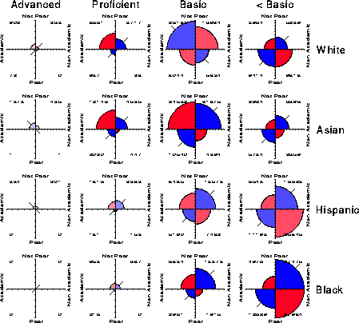
It is immediately apparent that the greatest proportion of all students performed at the lowest achievement levels, and that, at the very lowest level the largest proportion are in Non Academic programs, particularly among Hispanics and Blacks. Second, those who achieve Proficient level are much more likely Not Poor, and taking Academic programs. Finally (and sadly) the dearth of students achieving Advanced level stands out clearly.
In closing this section, I'll comment on more traditional statistical analyses and graphical displays of such data. One statistical analysis would be to fit a more ``meaningful'' log-linear model than the baseline models used earlier. When this is done, we find that the only (barely) tenable model (short of the saturated model, which must fit perfectly) is the all-three-way-interaction model, symbolized as
|
Alternatively, a logistic regression might attempt to model achievement level in relation to the predictors. As an example, consider a model for the probability that a student achieves at least Basic level. The logistic model of equivalent complexity to the log-linear model can be expressed as
| (3) |
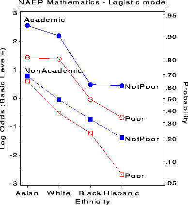
This figure shows most of the relations between Achievement Level and the predictors discussed earlier, but shows none of the relations among the predictors. The interaction terms in model stem from the fact that the profiles in Figure 14 are not parallel. For students in Non Academic programs, the effect of Poverty increases as achievement level decreases and is far greater for Hispanics than for Asians. For students in Academic programs, the effect of Poverty is larger for both Asians and Hispanics than for Whites and Blacks. This graph displays these more subtle aspects of the fitted logistic model, but the dominant message is clear: An Academic program greatly increases the likelihood of at least Basic achievement; being Poor greatly decreases it.
Unordered factors (disease classification, geographic region) deserve more careful thought. For a geographic classification (states, provinces) is it common to arrange the units alphabetically or (as is common in Canada) from east to west. When the goal of presentation is detection or comparison (as opposed to table lookup), this is almost always a bad idea.
Instead, I suggest a general rule for arranging the levels of unordered factors in visual displays - tables as well as graphs: sort the data by the effects to be observed. Sorting has both global and local effects: globally, a more coherent pattern appears, making it easier to spot exceptions; locally, effect-ordering brings similar items together, making them easier to compare. See de Falguerolles etal [9:1997:de Falguerolles et al.de Falguerolles, Fredrich, and Sawitzki] for related ideas.
The use of this principle is illustrated by the following:
For example, Figure 15 shows a Trellis dotplot display [6:1993b:Cleveland] of data on barley yields in a three-factor design: Year by Site by Variety. All three factors have been ordered in the panels by median overall yield. With this arrangement, the plot shows a startling anomaly which is not apparent in conventional plots: for all sites and for all varieties, yields in 1931 were greater than in 1932, except at the Morris site, where this difference is reversed. [29:1993:Wainer] and [3:1996:Carr and Olsen] have presented similar arguments for the effectiveness of such orderings on detection.
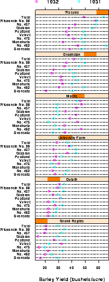
Figure 16 shows the means for various characteristics of automobiles (1972 data from Chambers et-al. (1983) ), classified by region of manufacture. The variables have been scaled so that longer rays represent ``better'' for all variables, and arranged around the circle according to their positions on the largest discriminant dimension. The figure makes it immediately clear that American cars are mainly larger and heavier, Japanese cars are better in price, mileage and repair record, while European cars have intermediate and mixed patterns. The same idea of ordering variables could be used in a profile plot or parallel coordinates plot.
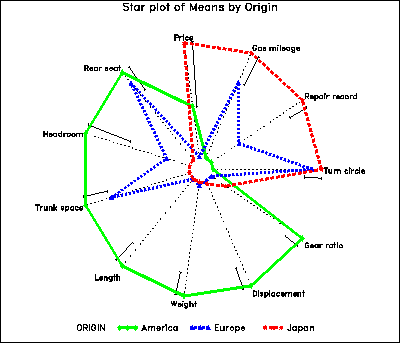
One analog of the scatterplot matrix for categorical data is a matrix of mosaic displays showing some aspect of the bivariate relation between all pairs of variables. The simplest case shows, for each pair of variables, the marginal relation, summed over all other variables. For example, Figure 17 shows the pairwise marginal relations among the variables Admit, Gender and Department in the Berkeley data shown earlier in fourfold displays (Figure 7 and Figure 8). The panel in row 2, column 1 shows that Admission and Gender are strongly associated marginally, as we saw in Figure 7, and overall, males are more often admitted. The diagonally-opposite panel (row 1, column 2) shows the same relation, splitting first by gender.
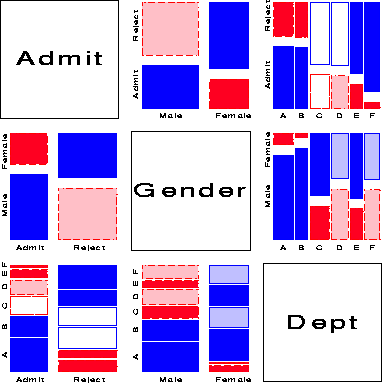
The panels in the third column (and third row) illuminate the explanation for the paradoxical result (Figure 8) that, within all but department A, the likelihood of admission is equal for men and women. The (1,3) panel shows the marginal relation between Admission and Department; departments A and B have the greatest overall admission rate, departments E and F the least. The (2, 3) panel shows that men apply in much greater numbers to departments A and B, while women apply in greater numbers to the departments with the lowest overall rate of admission.
Several further extensions are now possible. First, we need not show the marginal relation between each pair of variables in the mosaic matrix. For example, Figure 18 shows the pairwise conditional relations among these variables, in each case fitting a model of conditional independence with the remaining variable controlled. Thus, the (1,2) and (2,1) panels shows the fit of the model [Admit,Dept] [Gender, Dept], which asserts that Admission and Gender are independent, given (controlling for) department. Except for Department A, this model fits quite well, again indicating lack of gender bias.
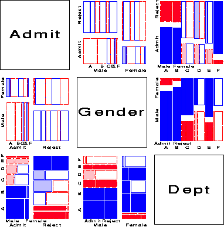
Second, the framework of the scatterplot matrix can now be used as a general method for displaying marginal or conditional relations among a mixture of quantitative and categorical variables. For marginal plots, pairs of quantitative variables are shown as a scatterplot, while pairs of categorical variables are shown as a mosaic display. Pairs consisting of one quantitative and one categorical variable can be shown as a set of boxplots for each level of the categorical variable. For conditional plots, we fit a model predicting the row variable from the column variable, partialing out (or conditioning on) all other variables from each. For quantitative variables, this is just the partial regression plot.
Finally, an analog of the coplot for categorical data is an array of plots of the dependence among two or more variables, conditioned (or stratified) by the values of one or more given variables. Each such panel then shows the partial associations among the foreground variables; the collection of such plots show how these as the given variables vary. Figure 8 and Figure 13 are two examples of this idea, using the fourfold display to represent the association in 2 ×2 tables.
Figure 19 and Figure 20 show two further examples, using the mosaic display to show the partial relations [Admit][Dept] given Gender, and [Admit][Gender] given Dept, respectively. Figure 20 shows the same results displayed in Figure 8: no association between Admission and Gender, except in Dept. A, where females are relatively more likely to gain admission.
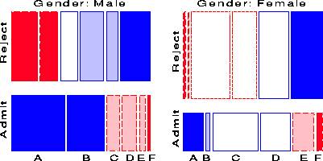
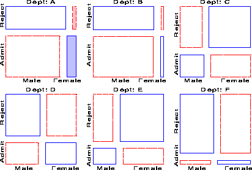
Figure 19 shows that there is a very strong association between Admission and Department-different rates of admission, but also shows two things not seen in other displays: First, the pattern of association is qualitatively similar for both men and women; second the association is quantitatively stronger for men than women-larger differences in admission rates across departments.
Preparation of this chapter was aided by the National Sciences and Engineering Research Council of Canada, Grant OGP0138748.
1 Color versions use blue and red at varying lightness to portray both sign and magnitude of residuals.
2 This explanation ignores the possibility of structural bias against women, e.g., lack of resources allocated to departments that attract women applicants.
3 Blacks and Hispanics are interchanged from the original table, in accord with association ordering, described below.
4 All of these models fit very badly, partly due to the enormous sample size, but they are to be regarded only as baseline models. When a model of joint independence, say, (Ethnicity, Poverty)(Program), is fit, the association between Ethnicity and Poverty is fit exactly, and so does not appear in the residuals.